A4988 Driver
The 4 pins 1A and 1B pins will be connected to one coil of the motor and the 2A and 2B
pins to the other coil of the motor. And at Vmot and Ground will connect the power supply.
On the left side, if the driver has two pins, Step and Direction are the pins that we really
use for controlling the motor’s movement. The Direction pin controls direction to associate it to one of the
advanced pins on our microcontroller, or for our situation, I will interface it to the pin number
4 of my Arduino Board. Step pin defines the step size of the stepper motor.
>

Stepper Motor
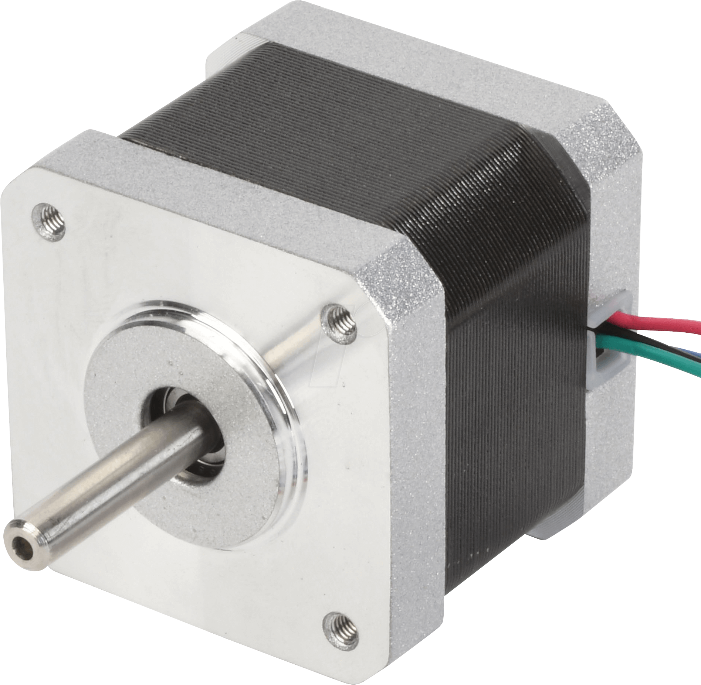
ARDUINO UNO
Arduino Uno is a microcontroller board consist of various different digital input/output pins ,
analog inputs, a 16 MHz quartz crystal, a USB connection, a power jack, an ICSP header and a reset
button. simply connect it to a computer with a USB cable or power it with a AC-to-DC adapter or battery to get started.
In our project we used digital input and out pins of Arduino for connection, one analog pin for
direction and one digital pin to identify the step of the motor. Furthermore, we connected 3
digital pins to the MS1, MS2 and MS3 pins of driver to make them high, high, low respectively,
to make the configuration of steps 1/8 and to gain more accurate results.

PCB DESIGNING
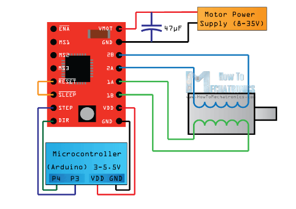

 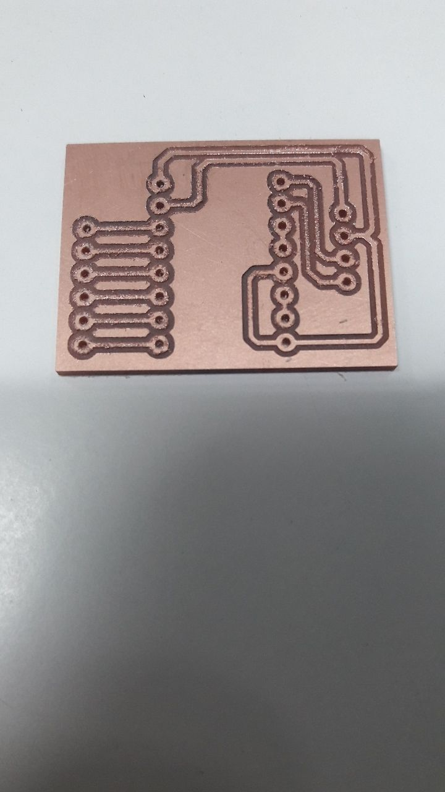
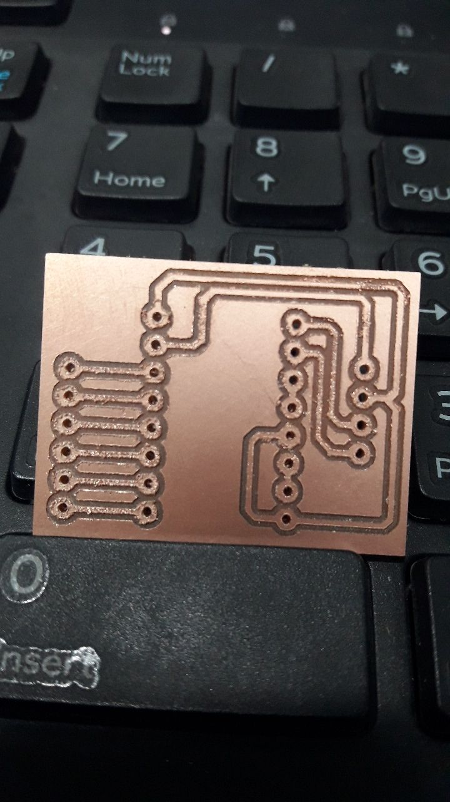
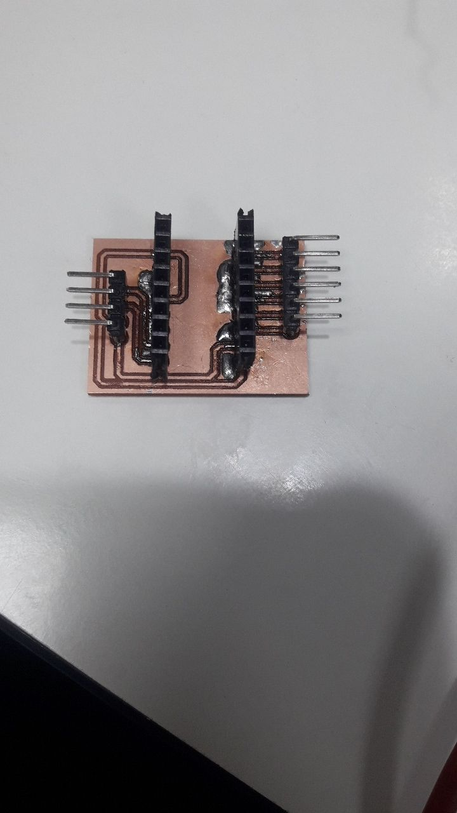
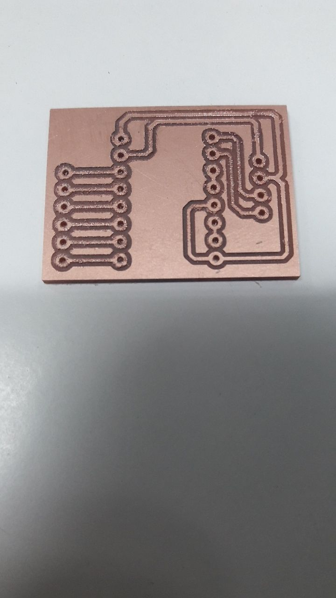
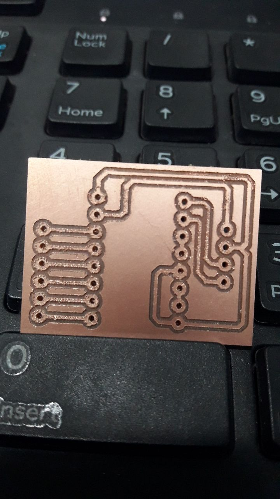
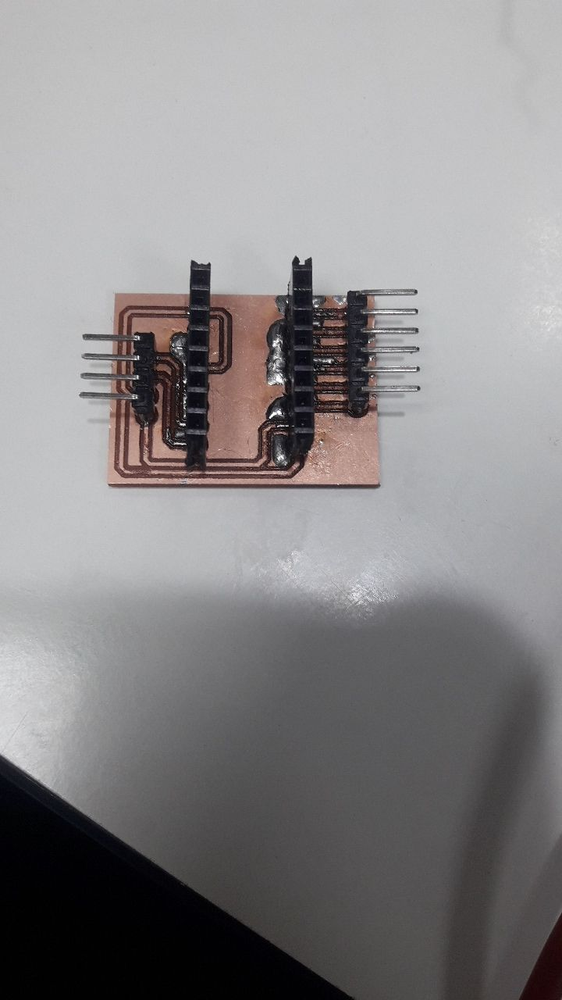
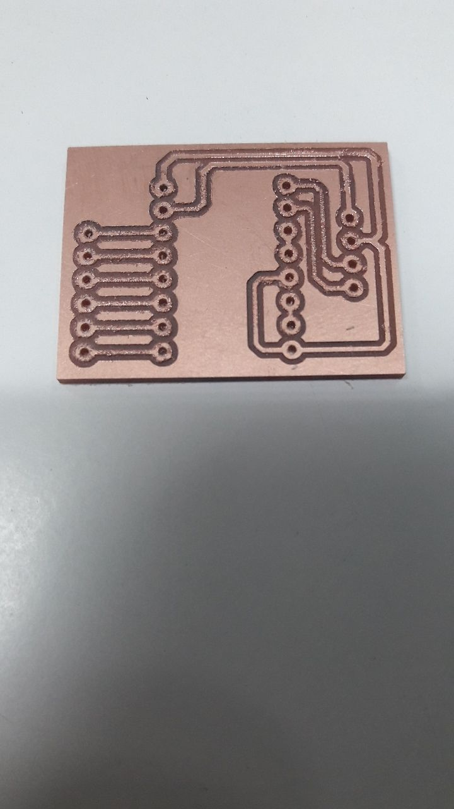
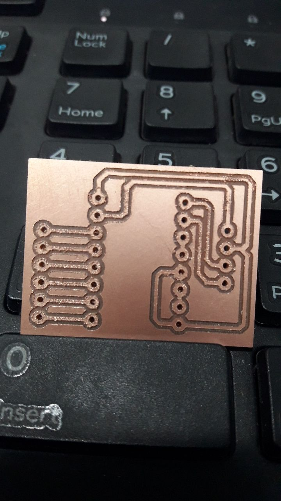
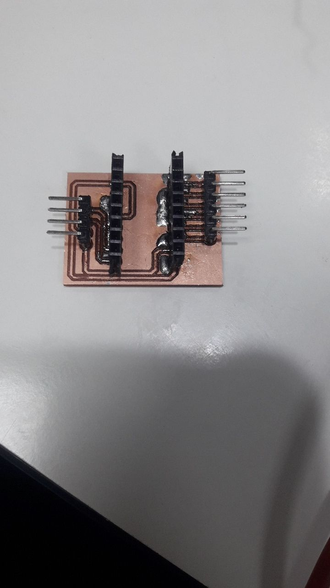